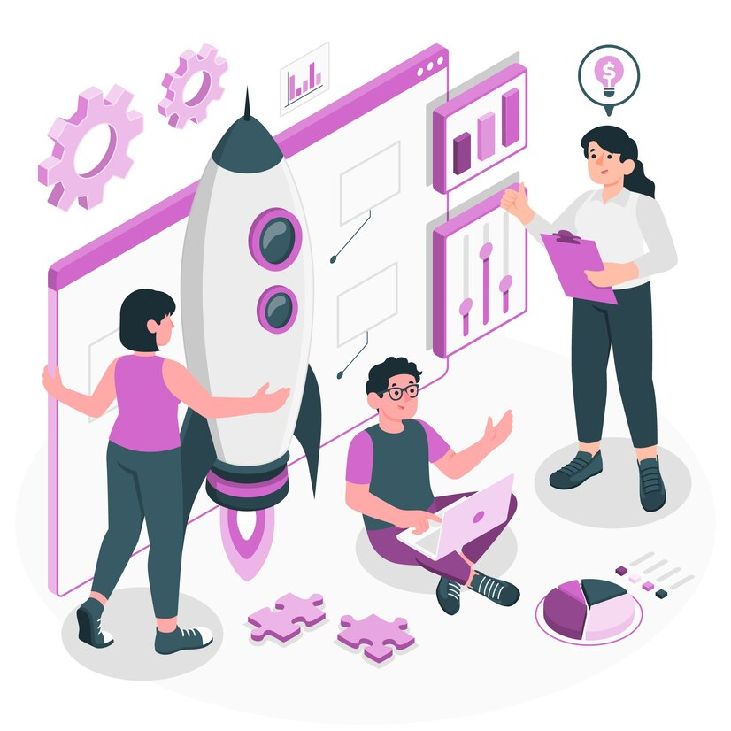
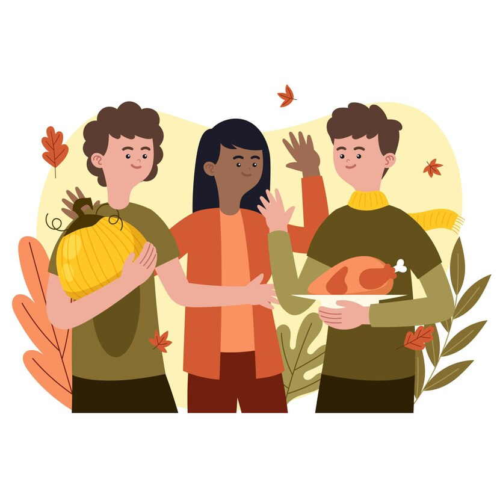

Productos y Servicios

Elaboración de Proyectos
- De desarrollo
- De pre – factibilidad y factibilidad
Consultoría, asesoría, asistencia y apoyo técnico
- Para el fomento de la productividad en los sectores económicos y la implementación de modelos de desarrollo sostenible

Redes de apoyo
- Impulsar la generación de oportunidades de empleo y la creación de redes de apoyo productivo
Seminarios, conferencias, foros, exposiciones, ferias
- Realizar actividades de difusión y comunicación en materia de desarrollo económico, productivo y tecnológico con enfoque en sostenibilidad
Estudios e investigaciones
- Sobre la problemática socioeconómica y productiva del país con enfoque en los objetivos de desarrollo sostenible
Convenios y cooperación
- Suscribir mecanismos de cooperación y convenios con instituciones públicas o privadas

Voluntariado
- Voluntariado de acción social y desarrollo para fortalecer la productividad y competitividad de los sectores productivos más vulnerables